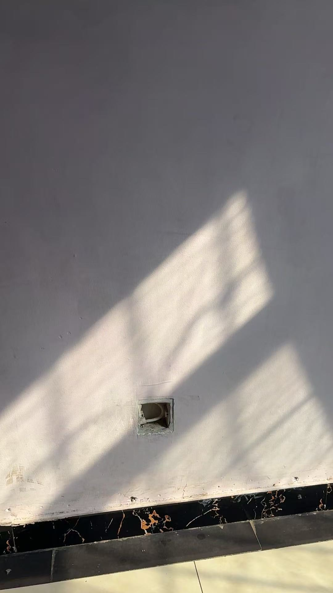

🌸 家族业力的真相 🌸
一、业力是改不了的根
家族的业力，你即便是这个小孩给别人了，但是他骨子里就是他根上，那个业力他是改不了的，知道吧？ [cite: 1]
啥是业力知道吧？福报是抵不过业力的，他的福报 就是他被别人领养了是他的福报，但是他家族业力太深了太大了，他抵不过这个东西啊。 [cite: 2]
为什么给大家讲这个东西？就是这个家族业力就很难改，你知道吧？你不要以为啊，我领养个孩子，这个孩子就是我家的人了，我都能用我的家的业力，那不是，那是两码事。 [cite: 3]
举个简单明了的例子吧，你比如说夫妻供灯很多，就是说夫妻供一盏灯，他供的一盏灯，什么超度冤亲债主，什么那只是供的他家族他俩的夫妻的业力的冤亲债主。 [cite: 3]
二、个人与共同业力不能混淆
但是个人的冤亲债主，他还是超度不了的，这能懂了吧？个人是个人的啊，共同是共同的，他的业力，他家族的业力不能混淆的，知道吧？ [cite: 4]
所以说即便是咱条件好，领养了一个本身苦命的小孩，但是有的小孩就是享不住这个福。 [cite: 4]
这个抖音上我看有很多，当时评论区我翻了翻，上面说的都挺多的，就是说领养的小孩家里边挺有钱，后来小孩都是要么学坏了，要么成小太妹了，要么就是又有一个还是更奇葩的，就是大公司总裁领养的小女孩爱上了自己员工的儿子，后来总裁跟这个女的断绝关系了，你拦不住你知道吗？ [cite: 5]
三、剧本里的业力主线
他的主线，他的剧本，如果他不修行，他还是根据他的业力，跟他原来的那个走。听懂了吧？ [cite: 6]
所以说还是那句话，就像命运眷顾了你一眼，你可能能挣第一桶金，你可能能遇见一个不错的心仪的对象，但是如果你去作啊，你不珍惜啊，你不抱着感恩的心态去面对你的财富，你的财富跟你心仪的对象都会流走，知道吧？ [cite: 7]
因为那是你的业力允许人家走的，你的业力承担不住这些财富，这些福气，知道吧？ [cite: 8]
四、起心动念来源于业力
这就是为啥我一直讲，一定要好好修，最起码咱修的今生能解脱，来世咱投胎，起点能高一点。起点高一点，就你的业力能够相对来说少一点，是吧？相对来说没有那么那么大那么深，是不是？ [cite: 9]
所以说为什么我一直讲起心动念很重要的，因为你的起心动念来源于哪？就是来源于你的业力，听懂了吗？起心动念夜杂乱啊，想法越恶，善念越少，就证明这段业力真的就你得注意了啊。 [cite: 9]

五、扩大那一点亮光
你看你，你的业力就是太阳照不到的地方，太阳能照到就是这一点，就是这一段时间，这个年龄段，这个时间点，只有这一点是亮光的，这是业力侵蚀不了的地方。 [cite: 10]
那么你要么保持住这一点，要么把这一天扩大，嗯，让你的业力影响你能少一点。能听懂吧？这比较直观了哈，这个照片正好我屋里太阳光照进来了。 [cite: 11]
六、化解累世恶习
那什么是业力呢？那就是你累生累世，今生今世有意无意当中啊，有一些不该办的事办了，有一些不该犯的错犯了，有一些起心动念不对了啊，然后生生世世跟着你的，然后影响你的习惯，你的气息，这个东西牵引着你的思想啊，往前走的一些东西。 [cite: 12]
所以我们修行就是把这些累生累世的这些恶的一些习性改掉，就是化解你的啊这个冤亲债主，然后修小掉，修掉你的这些业力，懂吧？ [cite: 12]
否则你不管怎么样活，始终是活在业力推动的这个范围内，知道吧？你始终是在这个圈上拉磨，只是你没发现啊，业力让你看到这些，让你看到那些，允许你只想这个，想不到那个。 [cite: 12]
七、业力阻碍转念
你比如说很多人不会转念想，为什么？就是业力阻挡着你，不让你转念想，能听懂哈？你比如很多事情你一问我，我都觉得都是好事，没有不好的事啊。 [cite: 13]
我一说你也说，哎，对你，你这一说好像也是这样。那为什么你自己不会想到这方面？就是业力能障深海，能敌须弥，是不是？ [cite: 13]
这是地藏经，原文就是这个业力。如果说你的智慧大，它就小，如果说你没有智慧，那他就大，知道吧？他像放大镜一样忽小忽大。那怎么是大小呢？就看你的智慧，就看你修行了，能听懂吗？ [cite: 13]
八、大智慧翻过须弥山
家族的业力啊，跟累生累世的业力加一块，就如同一个须弥山，但是就像大山一样压到你身上，你想要翻身，凭你个人的这点小聪明哈？不可能。 [cite: 14]
我告诉大家，我这个人是啥？我啥事上我没有那点小聪明，但是我有大智慧啊。这就是业力甚大，能敌须弥，能障深海，如须弥山，就忽大忽小。 [cite: 14]
你说能障深海，你说他大吧，是不是？但他有时候小的又跟小米粒一样，因为我能转念想，我能把这个业力给翻过去这个山，这能听懂了哈。 [cite: 14]
所以说，自古就说小聪明大智慧啊，在凡事上有点小聪明，可能能一时的就是觉得我挺好哈，我挺有自在，挺有成就。其实不是那样的哈，小聪明长久不了，想要彻底的洒脱自在，还是得有大智慧。 [cite: 15]
否则无论是你跟谁结婚了，无论是你攀上什么样好的缘分了，那只是暂时的，你留不住啊，你也不会长久的把它就像这个阳光一样，你能长久的把阳光洒满屋子的时候啊，那才是真正你的。那业力就消失了哈，能听懂了哈。 [cite: 15]
九、万法皆空，因果不空
还有前两天我看网上的又讨论什么万法皆空，因果不空是为什么？他说既然万法都是空的哈，都是假的，都是没有的，那为什么因果不空？问这话都是又掉到这个文字陷阱里边了哈。 [cite: 16]
哪有法呀？哪来法呀？法就是在人心中，你想一个是法，我想一个是法。他告诉你法是不定的啊，法也不是说一定长什么样子的，所以他是空的，你不用去想，你知道吧？你越想越掉进去。 [cite: 16]
因果不空是为什么？举个最简单的例子，你拿一张白纸，你写了几个字，你把这一张纸揉团，你扔了那个纸上，纸上的字在不在？人死了以后，你做过的那些行为都消失了吗？ [cite: 16]
大家难道不不不讨论你的行为吗？难道说你伤害别人，那些东西随着你走了就消失了吗？他留下的痕迹还在啊，所以万法皆空，因果不空。 [cite: 16]
十、法由心生，见解不同
所有的一切哈，法呀，术呀，这个道啊，干啥干啥，你说在哪？其实有心中来嘛，对吧？ [cite: 17]
你心中的释迦摩尼跟我心中的释迦摩尼能一样吗？不一样，甚至那天我说我是儒释道三修，那个人说那你佛家不修吗？我说儒释道三修，释就是释迦摩尼佛，就是佛家，你看看大家理解的一样吗？都不一样哈。 [cite: 17]
十一、修行落地，吃好三顿饭
适合咱老百姓的修行啊。佛法呀，都是什么？就是落地吃好一天三顿饭就行了。 [cite: 18]
别的哈都不适合咱老百姓修哈，越修越假，越修越空啊，越修越偏离正常生活。那不对哈啊，听话哈。 [cite: 18]
钱越多，业力冤亲越多，背后Z治斗争越多，越身不由己。 [cite: 19]